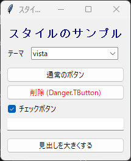

9. スタイルと外観
9.1 ttk.Style の基本
ttk のウィジェットの色やフォントは、原則としてウィジェットごとのオプションではなく、ttk.Style で定義するスタイルで指定します。ただし、ttk.Label には例外的に font、foreground、background オプションがあり、直接指定することもできます。スタイルには名前があり、ウィジェットの種類ごとに既定のスタイル名が決まっています。
ウィジェット |
既定のスタイル名 |
|---|---|
|
|
|
|
|
|
|
|
|
|
|
|
ほかのウィジェットのスタイル名は、widget.winfo_class() で確認できます。
スタイルの設定は configure メソッドで変更します。既定のスタイル名を指定すると、その種類のウィジェットすべての外観が変わります。
style = ttk.Style(root)
style.configure("TButton", padding=6) # すべての ttk.Button に適用
一部のウィジェットだけ外観を変えたい場合は、"任意の名前.既定のスタイル名" の形式で独自のスタイルを定義し、ウィジェットの style オプションに指定します。独自のスタイルは、ドットの右側のスタイルの設定を引き継ぎます。
style.configure("Danger.TButton", foreground="red")
ttk.Button(root, text="削除", style="Danger.TButton")
9.2 状態に応じた外観
ttk のウィジェットは、"active"（マウスが乗っている）、"pressed"（押されている）、"disabled"（操作不可）、"focus"（フォーカスがある）などの状態を持ちます。状態に応じて外観を変えるには、map メソッドを使います。
style.map("Danger.TButton", foreground=[("active", "darkred")])
オプションの値は、(状態, 値) の組のリストで指定します。リストの先頭から順に調べ、最初に一致した組の値が使われます。状態の前に ! を付けると、「その状態ではない」ことを表します。
ウィジェットの状態は、state メソッドで変更できます。たとえば、button.state(["disabled"]) でボタンを操作不可にし、button.state(["!disabled"]) で操作可能に戻します。
9.3 テーマの一覧と切り替え
ttk のウィジェットは、テーマに従って描画されます。利用できるテーマの一覧は theme_names() で取得し、theme_use(テーマ名) で切り替えます。引数なしで theme_use() を呼び出すと、現在のテーマ名を返します。
OS |
主なテーマ |
|---|---|
Windows |
|
macOS |
|
Linux |
|
注釈
スタイルの設定は、そのとき使用しているテーマに対して行われます。テーマを切り替えると、configure や map で設定した内容は反映されなくなるため、切り替えた後にもう一度設定してください。サンプルコードでは、define_styles 関数をテーマの切り替えのたびに呼び出しています。
vista や aqua などの OS 標準のテーマは、OS の機能でウィジェットを描画します。そのため、ボタンの背景色など、指定しても反映されないオプションがあります。色を自由に変えたい場合は、clam テーマの使用を検討してください。
9.4 フォントと色
フォントは、("ファミリー名", 大きさ, "スタイル") の形式のタプルで指定します。大きさはポイント単位で、スタイルには "bold"、"italic"、"underline" などを指定します。
ttk.Label(root, text="見出し", font=("Helvetica", 14, "bold"))
利用できるフォントのファミリー名は、tkinter.font.families() で確認できます。ファミリー名のうち Courier、Times、Helvetica の 3 つは、どの OS でも Tk が適切なフォントに対応付けるため、OS に依存しないコードを書くときに便利です。
tkinter.font.Font クラスを使うと、名前付きフォントを作成できます。名前付きフォントの設定を configure で変更すると、そのフォントを使っているすべてのウィジェットの表示が更新されます。また、Tk にはあらかじめ TkDefaultFont（ウィジェットの標準）、TkTextFont（入力欄）、TkFixedFont（等幅）などの名前付きフォントが定義されています。
色は、"red" や "navy" のような色の名前か、"#rrggbb" の形式の 16 進数で指定します。
次のサンプルコードは、テーマの切り替え、独自スタイル、名前付きフォントを試します。
1"""第 9 章: ttk.Style とフォントのサンプルです。
2
3テーマの切り替え、独自スタイルの定義、状態に応じた外観の変更を試します。
4"""
5
6import tkinter as tk
7from tkinter import font, ttk
8
9
10def main() -> None:
11 """テーマとスタイルを切り替えるウィンドウを表示します。"""
12 root = tk.Tk()
13 root.title("スタイルのサンプル")
14
15 style = ttk.Style(root)
16
17 # 名前付きフォントを作ります。
18 # 後から設定を変えると、このフォントを使う全ウィジェットに反映されます。
19 title_font = font.Font(root, family="Helvetica", size=14, weight="bold")
20
21 def define_styles() -> None:
22 """独自スタイルを定義します。
23
24 スタイルの設定は使用中のテーマに対して行われるため、
25 テーマを切り替えるたびに呼び出します。
26 """
27 # 「任意の名前.既定のスタイル名」の形式で定義します
28 style.configure("Title.TLabel", font=title_font, foreground="navy")
29 style.configure("Danger.TButton", foreground="red")
30 # 状態 (マウスが乗っている "active" など) に応じて値を変えます
31 style.map("Danger.TButton", foreground=[("active", "darkred")])
32
33 define_styles()
34
35 frame = ttk.Frame(root, padding=10)
36 frame.pack(fill="both", expand=True)
37
38 ttk.Label(frame, text="スタイルのサンプル", style="Title.TLabel").pack(
39 anchor="w"
40 )
41
42 # 利用できるテーマの一覧から選べるようにします
43 theme = tk.StringVar(value=style.theme_use())
44 theme_frame = ttk.Frame(frame)
45 theme_frame.pack(fill="x", pady=10)
46 ttk.Label(theme_frame, text="テーマ").pack(side="left", padx=(0, 10))
47 theme_box = ttk.Combobox(
48 theme_frame,
49 textvariable=theme,
50 values=style.theme_names(),
51 state="readonly",
52 )
53 theme_box.pack(side="left")
54
55 def change_theme(*args: object) -> None:
56 """選ばれたテーマに切り替えます。"""
57 style.theme_use(theme.get())
58 define_styles() # 新しいテーマにも独自スタイルを設定します
59
60 theme.trace_add("write", change_theme)
61
62 # 見た目を比べるためのウィジェットです
63 ttk.Button(frame, text="通常のボタン").pack(fill="x", pady=2)
64 ttk.Button(
65 frame, text="削除 (Danger.TButton)", style="Danger.TButton"
66 ).pack(fill="x", pady=2)
67 # variable を指定しないと、初期状態が「未確定」の表示になることがあります
68 checked = tk.BooleanVar(value=True)
69 ttk.Checkbutton(frame, text="チェックボタン", variable=checked).pack(
70 anchor="w", pady=2
71 )
72 ttk.Entry(frame).pack(fill="x", pady=2)
73
74 def enlarge_font() -> None:
75 """名前付きフォントの大きさを 2 ポイント大きくします。"""
76 title_font.configure(size=title_font.cget("size") + 2)
77
78 ttk.Button(frame, text="見出しを大きくする", command=enlarge_font).pack(
79 fill="x", pady=(10, 2)
80 )
81
82 root.mainloop()
83
84
85if __name__ == "__main__":
86 main()

実行結果